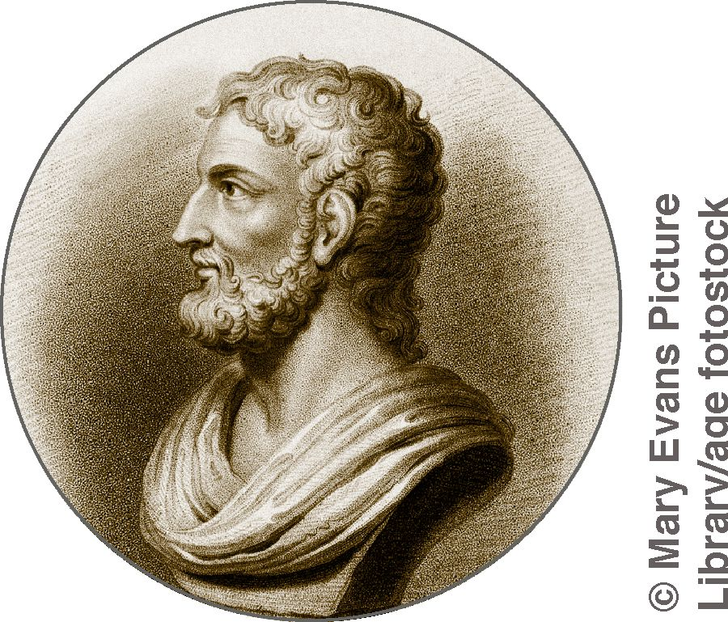
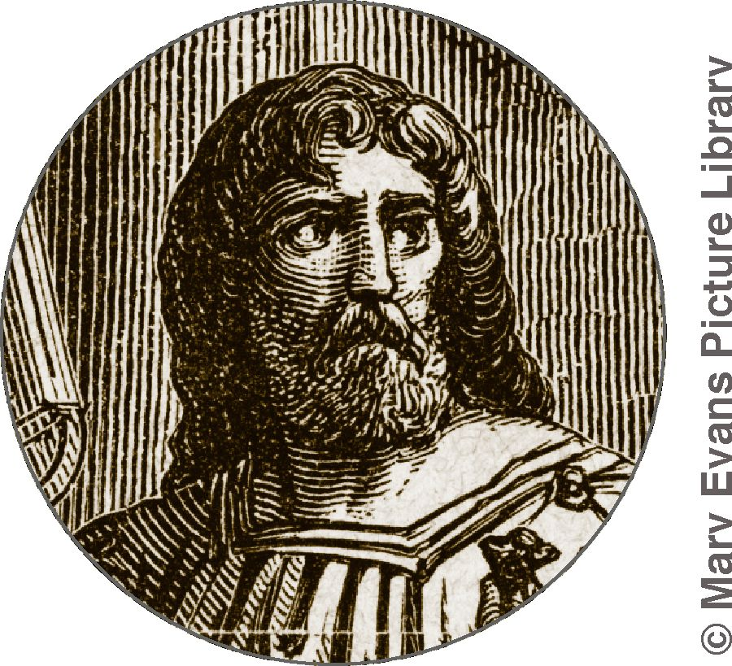
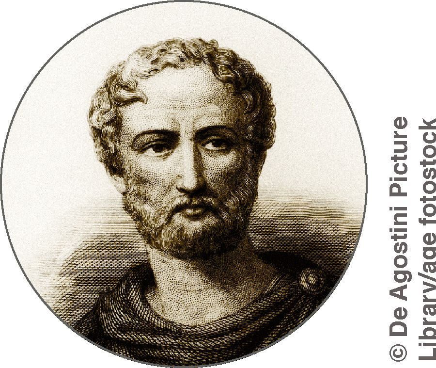
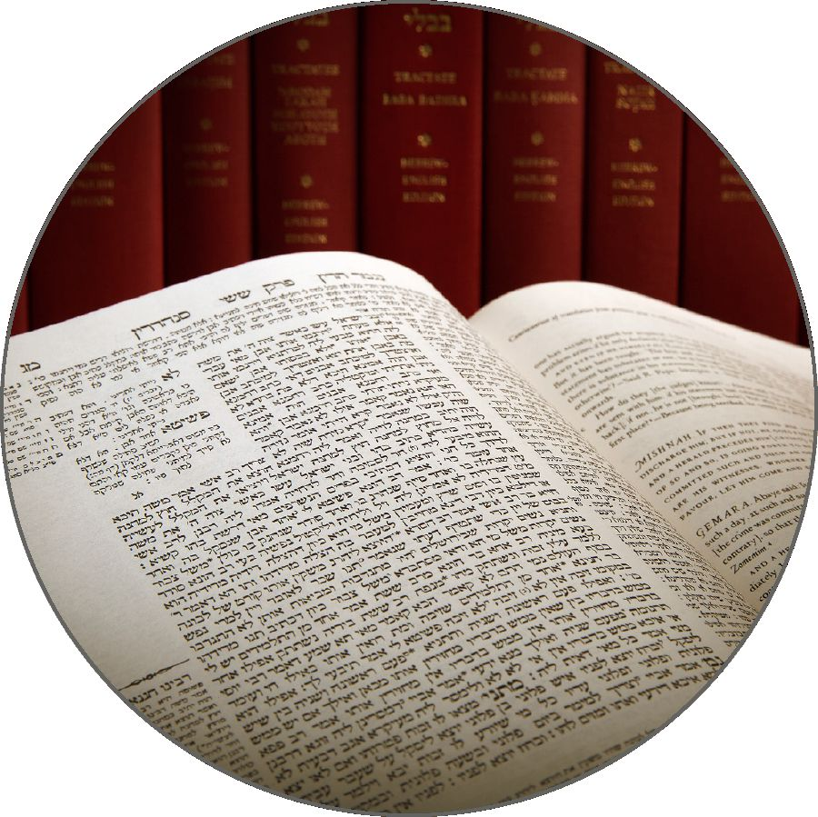

HE WAS neither rich nor powerful. He did not even have a home that he could call his own. Yet his teachings have influenced millions. Did Jesus Christ really exist? What do both modern and ancient authorities say?
Michael Grant, a historian and an expert on ancient classical civilization, noted: “If we apply to the New Testament, as we should, the same sort of criteria as we should apply to other ancient writings containing historical material, we can no more reject Jesus’ existence than we can reject the existence of a mass of pagan personages whose reality as historical figures is never questioned.”
Rudolf Bultmann, a professor of New Testament studies, stated: “The doubt as to whether Jesus really existed is unfounded and not worth refutation. No sane person can doubt that Jesus stands as founder behind the historical movement whose first distinct stage is represented by the oldest Palestinian community [of Christians].”
Will Durant, a historian, writer, and philosopher, wrote: “That a few simple men [the Gospel writers] should in one generation have invented so powerful and appealing a personality, so lofty an ethic and so inspiring a vision of human brotherhood, would be a miracle far more incredible than any recorded in the Gospels.”
Albert Einstein, a German-born Jewish physicist, asserted: “I am a Jew, but I am enthralled by the luminous figure of the Nazarene.” When asked if he viewed Jesus as a historical person, he responded: “Unquestionably! No one can read the Gospels without feeling the actual presence of Jesus. His personality pulsates in every word. No myth is filled with such life.”
“No one can read the Gospels without feeling the actual presence of Jesus.”—Albert Einstein
WHAT DOES HISTORY REVEAL?
The most detailed record of Jesus’ life and ministry is recorded in the Bible accounts known as the Gospels—Matthew, Mark, Luke, and John—named after the men who wrote them. In addition, a number of early non-Christian sources name him.

TACITUS
(c. 56-120 C.E., or Common Era) Tacitus is considered to be one of the greatest of the ancient Roman historians. His Annals deal with the Roman Empire from 14 C.E. to 68 C.E. (Jesus died in 33 C.E.) Tacitus wrote that when a great fire devastated Rome in 64 C.E., Emperor Nero was considered responsible. But Tacitus wrote that Nero accused the Christians in order to “scotch the rumour.” Then Tacitus said: “Christus, the founder of the name [Christian], had undergone the death penalty in the reign of Tiberius, by sentence of the procurator Pontius Pilatus.”—Annals, XV, 44.

SUETONIUS
(c. 69–a. 122 C.E.) In his Lives of the Caesars, this Roman historian recorded events during the reigns of the first 11 Roman emperors. The section on Claudius refers to turmoil among the Jews in Rome that was likely caused by disputes over Jesus. (Acts 18:2) Suetonius wrote: “Since the Jews constantly made disturbances at the instigation of Chrestus [Christus], he [Claudius] expelled them from Rome.” (The Deified Claudius, XXV, 4) Although wrongly accusing Jesus of creating disturbances, Suetonius did not doubt his existence.

PLINY THE YOUNGER
(c. 61-113 C.E.) This Roman author and administrator in Bithynia (modern Turkey) wrote to Roman Emperor Trajan about how to deal with the Christians in that province. Pliny said that he tried to force Christians to recant, executing any who refused to do so. He explained: “Those who . . . repeated after me an invocation to the [pagan] Gods, and offered adoration, with wine and frankincense, to your image . . . and who finally cursed Christ . . . , I thought it proper to discharge.”—Pliny—Letters, Book X, XCVI.
FLAVIUS JOSEPHUS
(c. 37-100 C.E.) This Jewish priest and historian states that Annas, a Jewish high priest who continued to wield political influence, “convened the judges of the Sanhedrin [the Jewish high court] and brought before them a man named James, the brother of Jesus who was called the Christ.”—Jewish Antiquities, XX, 200.

THE TALMUD
This collection of Jewish rabbinic writings, dating from the third to the sixth centuries C.E., shows that even Jesus’ enemies affirmed his existence. One passage says that on “the Passover Yeshu [Jesus] the Nazarean was hanged,” which is historically correct. (Babylonian Talmud, Sanhedrin 43a, Munich Codex; see John 19:14-16.) Another states: “May we produce no son or pupil who disgraces himself in public like the Nazarene”—a title often applied to Jesus.—Babylonian Talmud, Berakoth 17b, footnote, Munich Codex; see Luke 18:37.
EVIDENCE FROM THE BIBLE
The Gospels give us a comprehensive account of Jesus’ life and ministry, including specific details about people, places, and times—the hallmarks of authentic history. An example is found at Luke 3:1, 2, which helps us to establish the exact date when a man named John the Baptist, a forerunner of Jesus, commenced his work.
Luke wrote: “In the 15th year of the reign of Tiberius Caesar, when Pontius Pilate was governor of Judea, Herod was district ruler of Galilee, Philip his brother was district ruler of the country of Ituraea and Trachonitis, and Lysanias was district ruler of Abilene, in the days of chief priest Annas and of Caiaphas, God’s declaration came to John the son of Zechariah in the wilderness.” This detailed, precise list enables us to establish that “God’s declaration came to John” in the year 29 C.E.
The seven public figures Luke names are well-known to historians. That said, for a time certain critics did question the existence of Pontius Pilate and Lysanias. But the critics spoke too soon. Ancient inscriptions bearing the names of those two officials have been discovered, confirming Luke’s accuracy.a
WHY DOES IT MATTER?
Jesus taught people about the Kingdom of God, a world government
The question of Jesus’ existence matters because his teachings matter. For example, Jesus taught people how to live happy, fulfilling lives.b He also promised a time when mankind will live in true peace and security, united under a single world government called “the Kingdom of God.”—Luke 4:43.
The designation “the Kingdom of God” is appropriate because this world government will express God’s sovereignty over the earth. (Revelation 11:15) Jesus made that fact clear when he said in his model prayer: “Our Father in the heavens, . . . let your Kingdom come. Let your will take place . . . on earth.” (Matthew 6:9, 10) What will Kingdom rule mean for mankind? Consider the following:
Wickedness, including greed and corruption, will be gone forever, along with ungodly people.—Psalm 37:10, 11.
The Kingdom’s subjects will enjoy meaningful, productive work.—Isaiah 65:21, 22.
The earth will fully recover from its present sick state and produce bountiful crops.—Psalm 72:16; Isaiah 11:9.
Some people may consider those promises wishful thinking. But is it not wishful thinking to trust in human efforts? Consider: Even in spite of spectacular advances in education, science, and technology, millions today feel deeply insecure and uncertain about tomorrow. And daily we see evidence of economic, political, and religious oppression, as well as greed and corruption. Yes, the reality is that human rule is a failure!—Ecclesiastes 8:9.
At the very least, the question of Jesus’ existence merits our consideration.c As 2 Corinthians 1:19, 20 states: “No matter how many the promises of God are, they have become ‘yes’ by means of [Christ].”
An inscription bearing the name of a tetrarch, or “district ruler,” called Lysanias has been found. (Luke 3:1, footnote) He ruled over Abilene at the very time Luke mentioned.
A fine example of Jesus’ teachings can be found in Matthew chapters 5 to 7, often called the Sermon on the Mount.
For more information about Jesus and his teachings, go to www.jw.org and look under BIBLE TEACHINGS > BIBLE QUESTIONS ANSWERED.